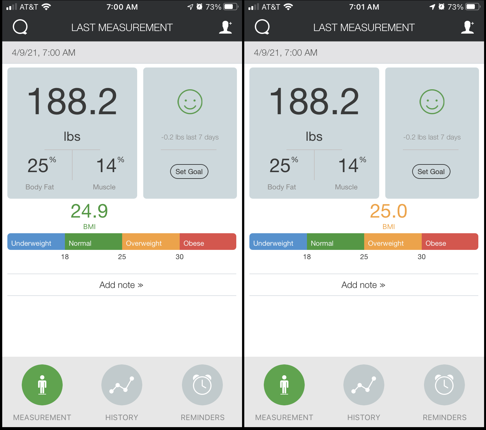

In the image you'll see two displays for a single weight measurement I conducted recently on a Qardio Base scale. Qardio sells a number of devices that can measure various things and report those measurements to your phone. I have a Qardio Base for my weight, and a Qardio Arm for blood pressure. The first Qardio Base I had was flaky, and fortunately Qardio replaced it. Yay, Qardio! The new one seems to work pretty well -- except that is does weird things with my measurements, which is the purpose of this post. I use these devices with my IPhone. These products will save the measurements to Apple Health. But I also manually copy the measurements over into a spreadsheet so I can see a lot of different data in one place and analyze them.
Check the image. This is the very same measurement, only the second display is taking place a minute later. Note the BMI values. When I stood on the scale and took the measurement, the BMI is reported as 24.9. 
However, a minute later, the measurement is 25.0.
This is especially annoying because 24.9 is in the "normal" range, while 25.0 is in the "overweight" range. So I notice that. I've been trying to lose weight recently, and this discrepenacy drives me pretty crazy. Which is it, Qardio? Get your story straight!
Thus, I have noticed that the BMI calculation will sometimes change within a few minutes of the original measurement. The discrepancy can be triggered by completely shutting down the app and restarting it -- and then looking at your last measurement from the History rather than the live view. This is a chronic issue. I just saw a fluctuation again this morning.
I first reported this issue to Qardio on September 20, 2020. On Oct. 13 I was told: "Our engineering team has not closed this issue and is still investigating into what may be causing this issue." That's cool. Anyway, it was never fixed. I reported it again on Nov. 20, 2020. I reported it again on Dec. 5, 2020. I reported it again on April 2, 2021. Every time they suggest updating the app -- which I do. But I think it's still broken; we'll see how the latest upgrade goes.
So this is actually a really terrible bug. Here's why: You can't depend on the display of the value. Sometimes it changes. This erodes one's faith in the idea that the device is making an accurate measurement. It's an especially bad bug because, really, that's all the system is supposed to do!: Measure a value and report it. It would seem, though, that: (1) Qardio is not able to recognize that this is a serious bug that undermines one's faith in their system; and/or (2) they can't fix it.
Why?
Smells like a rounding error to me, and maybe they don't have control over part of their ecosystem.
Here's my theory. Let's say that the original measurement is . . . 24.9499.
When it's displayed, it is rounded to a precision of 1 digit. So 24.9499 rounded to the nearest fractional digit is 24.9.
I think, then, that Qardio saves that reading, 24.9499. But when they save it, they save it rounded to two digits. This rounding might happen locally on the phone, or on their server or in Apple Health. Anyway, rounded to two fractional digits, it's 24.95.
Now the next time the value is displayed, they look up the saved value (24.95). They then display the saved value rounded to one fractional digit. And what is 24.95 rounded to one fractional digit? It's 25.0.
Oops.
Before I close, I suppose I should belabor what "rounding" a number can mean. The Ruby documentation says that a number rounded to ndigits means "Returns float rounded to the nearest value with a precision of ndigits decimal digits." Here's how one implementation of Ruby does it (I'm looking at the code from Rubinus here and here, which is easy to read):
a by 10**n, giving a1.a1, giving a2.a1 minus a2 >= 0.5, set a2 to a2 + 1.0.a2 / 10**n.So let's try this with a set to 24.9499 and n set to 1:
a1 is 249.499a2 is 249a1 minus a2 is 0.499 which is not greater than 0.5 so do nothing)249 / 10**1, or 24.9.And here's the case with a set to 24.9599 and n set to 1:
a1 is 249.599a2 is 249a1 minus a2 is 0.599 which is greater than 0.5 so set a2 to a2 + 1.0 (250)250 / 10**1, or 25.0.Maybe this will help Qardio fix their bug.
comments powered by Disqus